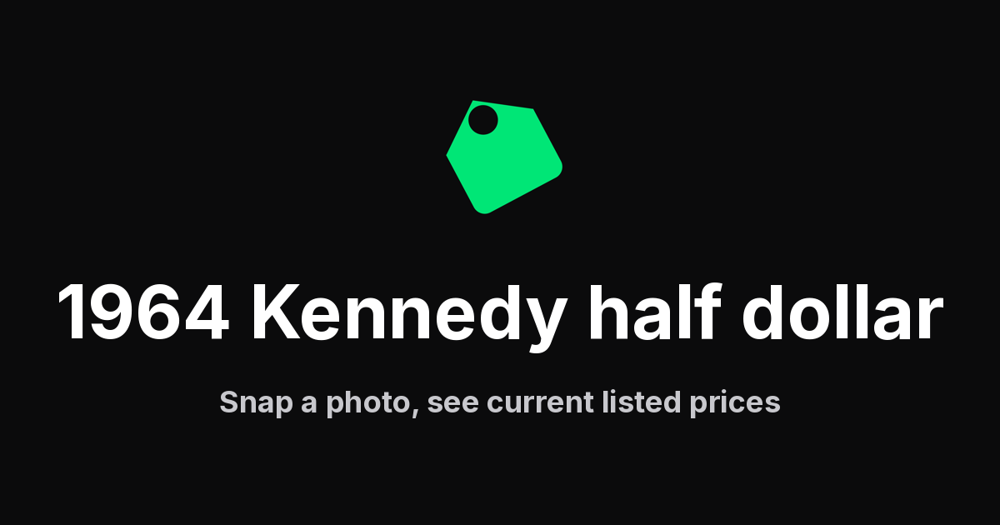

A 1964 Kennedy half dollar is easy to over-read. The date is famous, the coin is 90 percent silver, and social posts often mix melt value, retail asks, and once-off sales into one dramatic number. That is how a worn circulation strike gets treated like a scarce variety, and how a sharp proof gets sold near melt because nobody checked the finish.
If you want a useful read on a 1964 Kennedy half dollar, check yours from a photo. Start with the coin in your hand, confirm the date, the mint mark, and whether it looks like a circulation strike or a proof, then look at a current listed range. That is what  How Much Is It Worth: Scanner is built to do.
How Much Is It Worth: Scanner is built to do.
This is the first year of the series and the only regular circulating year struck in 90 percent silver for this design. Later 1965 to 1970 halves have less silver, and later clad coins are a different metal again. Even a worn 1964 example has a metal floor above face value. Mint mark, condition, and variety then move the coin above or around that floor.
Take or upload up to three photos. Photograph both sides, including the date and the mint mark. If you think it might be an accented-hair proof, get a clear shot of the hair detail above the ear as well. The app shows the identification first. If the date or mint looks off, you correct it before any price lookup.
Then you see a Worth about figure, the listed range around it, a confidence level, and the live listings behind the number, so you can open them yourself. Coin figures also draw on Numista, with a source credit where that data appears. Gold and silver use a live metal price as a floor. Melt is not a collector price for a sharp, proof, or variety coin, and a dealer bid can sit below a simple melt calculation. If the data is thin, the result is labelled as a rough estimate. The product will not invent a precise figure, and it is not a certified appraisal or an offer to buy.
Want to try it? Snap a photo at https://howmuchisitworth.today/1964-kennedy-half-dollar-value. The website includes one free web scan a day. Get the free iPhone app at https://apps.apple.com/app/id6832980231, with 3 free scans plus 1 a week. On Android? Check https://howmuchisitworth.today/ for the Android release.
Wear on the hair and the cheek tells you whether you have a typical circulated coin or something closer to uncirculated. Proof coins have a different finish and a different listing set from a worn pocket piece. Do not clean the coin. Cleaning can do lasting damage, and it can make an honest description harder later.
The variety people ask about most is the 1964 accented-hair proof, a real proof variety with a different hair detail above the ear. It is not automatic proof that every 1964 half is scarce. Compare the hair with a clear reference photo, and do not invent a price from a social post. Ordinary 1964 circulation strikes are silver coins, not error coins, just because the date is famous.
You can adjust the condition in a tap and watch the value update. If a result looks surprisingly high, check whether the comps are proofs, high-grade coins, or confirmed varieties. If it looks surprisingly low, check whether the date, mint mark, or finish was missed.
If you decide to sell, you can copy a ready-made listing in a tap, with Quick sale, Fair price, or Top dollar. Save the scan if you are working through a jar or a small pile and want a running picture of what you own. A common worn 1964 half often goes to a coin shop or a bullion dealer, near melt. A proof, a high-grade coin, or a confirmed accented-hair variety may belong in a specialist listing.
A listed range is still a spread of asking prices. A sold price can sit below it. Dealer charts and "fortune" posts often mix melt, retail asking prices, and once-off sales. Use a current listed range, and treat melt as a floor, to decide whether to keep the coin, sell it near silver, or get a second opinion on something unusual.
The app is free to start. You get 3 free scans plus 1 a week.
If you have a 1964 Kennedy half dollar in a drawer, check yours from a photo. Start at https://howmuchisitworth.today/1964-kennedy-half-dollar-value, or download the app and scan your first coin free.
I also wrote a Google Docs walkthrough of the same photo method: How Much Is It Worth: Scanner.